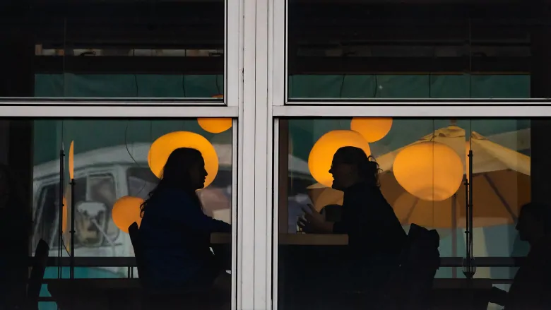

Masks now required in B.C. middle and secondary school classrooms, but there's a catch
VANCOUVER -- For months, students and staff in B.C. middle schools and high schools have had to wear masks in hallways and other common spaces.
Read the full story on CTV news
B.C.'s bar and restaurant industry braces for renewed restrictions ahead of Super Bowl Sunday

Hospitality industry wary of a New Year's Eve repeat and hoping for a heads-up on any changes to current rules
Read the full story on CBC